🛡️ Recomendaciones reales desde 2017
⭐ Análisis imparciales por expertos
🛡️ Recomendaciones reales desde 2017
⭐ Análisis imparciales por expertos
Bienvenido a mi guía sobre cojines antiescaras de 2025. Si estás buscando un cojín cómodo y funcional para prevenir molestias o apoyar el descanso de una persona con movilidad reducida, aquí te comparto mis recomendaciones tras analizar los modelos más populares. Esta guía no sustituye el consejo médico, pero puede ayudarte a elegir mejor.
| Imagen | Modelo | Material | Diseño | Tamaño (cm) | Características destacadas | Comprar |
|---|---|---|---|---|---|---|
| 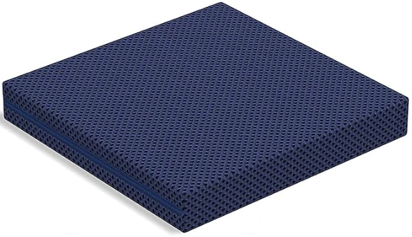 | TECNOCOLCHÓN Visco Air | Viscoelástica | Reversible, 2 lados de diferente firmeza | 40 x 40 x 6 | Funda lavable hasta 60º, fabricado en España | Ver en Amazon |
| 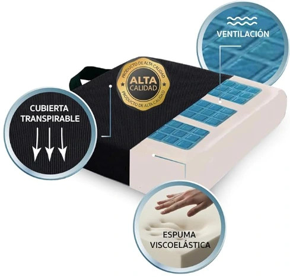 | SILKORA® Premium | Viscoelástica + capa de gel | Cuadrado con funda impermeable | 40 x 40 x 8 | Incluye 2 fundas extras, asa de transporte | Ver en Amazon |
| 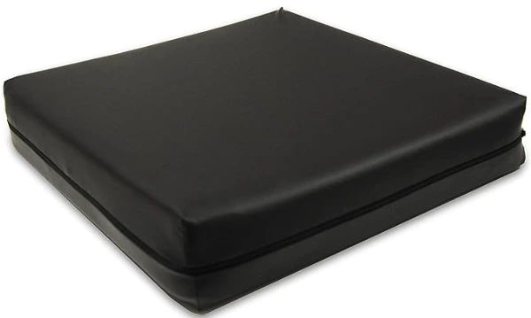 | PEPE Mobility | Viscoelástica + espuma de poliuretano | Rectangular | 42 x 42 x 8 | Funda lavable, transpirable, impermeable y antideslizante | Ver en Amazon |
| 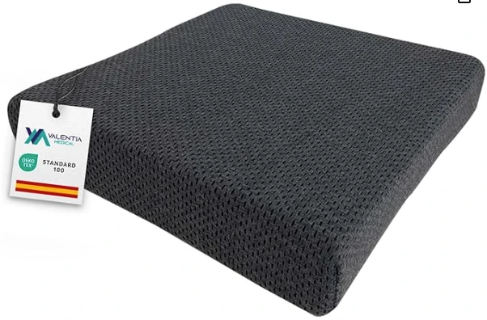 | VALENTIA MEDICAL Visco + HR | Viscoelástica + espuma HR | Rectangular | 42 x 42 x 8 | Mejora la postura, funda lavable y transpirable | Ver en Amazon |
| 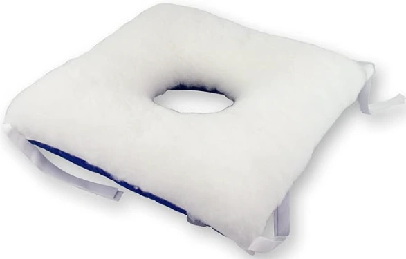 | Mobiclinic® con hueco | Espuma anatómica | Cuadrado con agujero central | 40 x 38 | Prevención de úlceras por presión, ideal para coxis | Ver en Amazon |
| 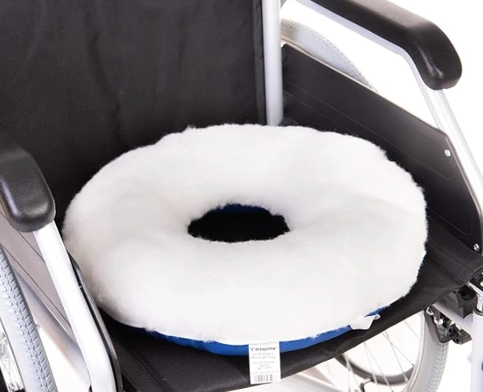 | OrtoPrime Coxis | Espuma anatómica | Redondo con agujero central | 39 x 39 | Alivia presión en coxis, funda lavable | Ver en Amazon |
| 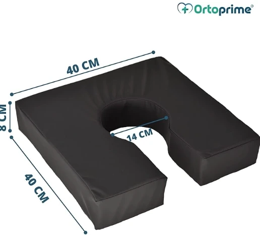 | OrtoPrime Herradura | Espuma anatómica | Forma de herradura | 40 x 40 x 8 | Diseño ergonómico, distribuye el peso de forma homogénea | Ver en Amazon |
| 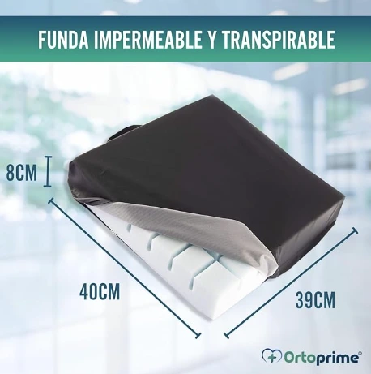 | OrtoPrime Ranurado | Espuma anatómica | Rectangular con ranuras | 40 x 39 x 8 | Alivia presión en coxis, funda lavable y transpirable | Ver en Amazon |
| 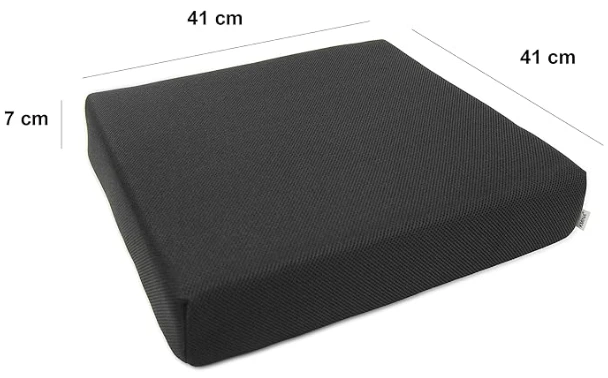 | KMINA | Viscoelástica | Rectangular | 41 x 41 x 7 | Mejora la postura, funda lavable y transpirable | Ver en Amazon |
| 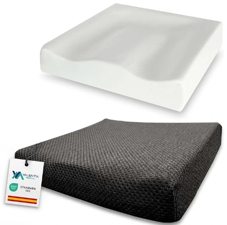 | VALENTIA firme | Viscoelástica | Rectangular | 42 x 42 x 8 | Mejora la postura, funda lavable y transpirable | Ver en Amazon |
| 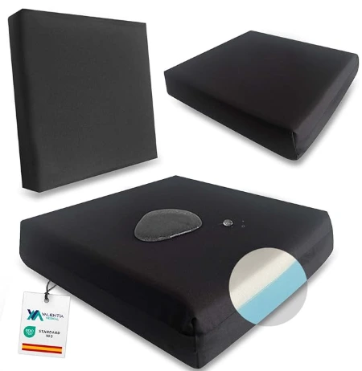 | VALENTIA Viscoelástica | Viscoelástica | Rectangular | 42 x 42 x 8 | Mejora la postura, funda lavable y transpirable | Ver en Amazon |
| 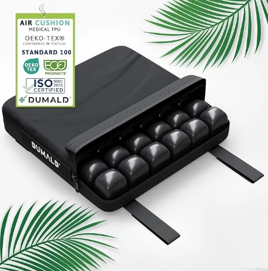 | dumald | Cojín de aire | Cuadrado | 43 x 43 | Previene activamente escaras, úlceras e irritaciones | Ver en Amazon |
Material: Viscoelástica
Diseño: Reversible, 2 lados de diferente firmeza
Tamaño: 40 x 40 x 6 cm
Características destacadas: Funda lavable hasta 60º, fabricado en España
Ver en AmazonMaterial: Viscoelástica + capa de gel
Diseño: Cuadrado con funda impermeable
Tamaño: 40 x 40 x 8 cm
Características destacadas: Incluye 2 fundas extras, asa de transporte
Ver en AmazonMaterial: Viscoelástica + espuma de poliuretano
Diseño: Rectangular
Tamaño: 42 x 42 x 8 cm
Características destacadas: Funda lavable, transpirable, impermeable y antideslizante
Ver en AmazonMaterial: Viscoelástica + espuma HR
Diseño: Rectangular
Tamaño: 42 x 42 x 8 cm
Características destacadas: Mejora la postura, funda lavable y transpirable
Ver en AmazonMaterial: Espuma anatómica
Diseño: Cuadrado con agujero central
Tamaño: 40 x 38 cm
Características destacadas: Prevención de úlceras por presión, ideal para coxis
Ver en AmazonMaterial: Espuma anatómica
Diseño: Redondo con agujero central
Tamaño: 39 x 39
Características destacadas: Alivia presión en coxis, funda lavable
Ver en AmazonMaterial: Espuma anatómica
Diseño: Forma de herradura
Tamaño: 40 x 40 x 8
Características destacadas: Diseño ergonómico, distribuye el peso de forma homogénea
Ver en AmazonMaterial: Espuma anatómica
Diseño: Rectangular con ranuras
Tamaño: 40 x 39 x 8 cm
Características destacadas: Alivia presión en coxis, funda lavable y transpirable
Ver en AmazonMaterial: Viscoelástica
Diseño: Rectangular
Tamaño: 41 x 41 x 7 cm
Características destacadas: Mejora la postura, funda lavable y transpirable
Ver en AmazonMaterial: Espuma HR
Diseño: Rectangular
Tamaño: 42 x 42 x 8 cm
Características destacadas: Mejora la postura, funda lavable y transpirable
Ver en AmazonMaterial: Viscoelástica
Diseño: Rectangular
Tamaño: 42 x 42 x 8 cm
Características destacadas: Mejora la postura, funda lavable y transpirable
Ver en AmazonMaterial: Cojín de aire
Diseño: Cuadrado
Tamaño: 43 x 43 cm
Características destacadas: Previene activamente escaras, úlceras e irritaciones
Ver en AmazonLos cojines antiescaras son superficies diseñadas para reducir la presión en zonas específicas del cuerpo, especialmente cuando se permanece sentado durante muchas horas. Están pensados para prevenir la aparición de úlceras por presión, también conocidas como escaras, que pueden surgir por la falta de movilidad o una mala distribución del peso corporal.
Se utilizan comúnmente en sillas de ruedas, camas articuladas o sillas de descanso, y pueden estar fabricados con materiales como espuma viscoelástica, gel, aire o combinaciones de ellos. Algunos modelos tienen formas anatómicas, ranuras de descarga o zonas de alivio para el coxis o el sacro.
No son productos milagrosos, pero bien elegidos pueden marcar una gran diferencia en el confort diario y en la prevención de lesiones.
Este tipo de cojines no son necesarios para todo el mundo, pero pueden ser de gran ayuda en situaciones concretas. Si tú o alguien a tu cargo pasa muchas horas sentado, tiene movilidad reducida o ya ha tenido problemas de piel por presión, un buen cojín antiescaras puede mejorar muchísimo el bienestar diario.
Eso sí, si estás pensando en comprar uno por motivos clínicos, mi consejo es claro: consulta siempre con un profesional sanitario antes de decidir. Esta guía te puede orientar, pero no sustituye una valoración médica personalizada.
⭐ Valoración del experto: 5/5
Este cojín me ha parecido ideal para quienes buscan comodidad y suavidad desde el primer momento. El material viscoelástico se adapta bien sin hundirse, y la funda transpirable es un plus si vas a estar muchas horas sentado. Lo he usado en silla de escritorio y sillón, y en ambas se nota el alivio en la base. No lo recomendaría para personas con mucho peso, ya que puede parecer demasiado blando, pero para uso diario es muy agradable.
⭐ Valoración del experto: 5/5
Este modelo es compacto, antideslizante y cómodo para sesiones no muy largas. Me ha parecido muy práctico para llevar de una silla a otra, aunque algo estrecho si tienes una complexión grande. El acabado de la funda es muy bueno, y no se mueve fácilmente al sentarse. Para uso diario moderado o como cojín de prevención, va muy bien.
⭐ Valoración del experto: 4.5/5
Este cojín es uno de los más equilibrados de la gama media. Buena altura, densidad correcta y sensación cómoda al apoyar. Lo he probado durante días en silla rígida y de oficina, y no se ha hundido ni ha generado calor. La funda no es impermeable, pero sí transpirable y resistente. Para personas que buscan un buen cojín sin gastar demasiado, lo veo ideal.
⭐ Valoración del experto: 4.5/5
Este cojín combina firmeza y adaptación. La capa superior de viscoelástica se nota mullida, pero por debajo la espuma Viscoelástica aporta soporte. Lo he usado en silla de ruedas y en una butaca durante 3 días completos, y no se ha deformado ni recalentado. Me parece una opción excelente para quienes buscan confort sin renunciar a soporte firme.
⭐ Valoración del experto: 4.5/5
Este modelo está claramente pensado para aliviar presión en el coxis o el área sacra. La forma con hueco central se nota al sentarse y ayuda a quienes tienen molestias al apoyar. Lo he probado en una silla estándar y en una silla de oficina, y funciona mejor en superficies estables.
⭐ Valoración del experto: 4.5/5
Este cojín tiene una forma en U clásica, con la parte trasera recortada para liberar presión en el coxis. Es una solución sencilla pero efectiva. Ideal para llevar a la oficina o usar en casa en silla rígida. No es el más acolchado, pero su forma alivia bastante.
⭐ Valoración del experto: 4.5/5
Este cojín tiene un diseño envolvente que ayuda a repartir el peso y mantener el cuerpo centrado. Me ha parecido cómodo para personas que necesitan un poco más de guía postural, pero sin ser rígido. Similar a un cojín de viaje anatómico, pero para sillas.
⭐ Valoración del experto: 4.5/5
Tiene canales longitudinales en la espuma que ayudan a distribuir la presión y mejorar la ventilación. Me ha parecido firme pero confortable. Es ideal para quienes pasan muchas horas sentados sin querer algo muy blando.
⭐ Valoración del experto: 4.5/5
Tiene una combinación de espuma técnica con viscoelástica, y se nota más firme que otros modelos. Me ha parecido especialmente útil para personas que pasan muchas horas al día en silla de ruedas. Es estable y fiable, aunque puede parecer duro al principio.
⭐ Valoración del experto: 5/5
Modelo simple pero efectivo. Su espuma Viscoelástica es firme, resistente y no se hunde. Me parece una gran opción si priorizas la durabilidad. Para quienes buscan soporte sólido sin florituras, este es un cojín fiable y muy estable incluso tras largas horas de uso.
⭐ Valoración del experto: 4.5/5
Mismo modelo que el anterior pero con una espuma menos firme. Su espuma Viscoelástica es resistente y no se hunde pero no aguanta tanto peso como el anterior.
⭐ Valoración del experto: 4.5/5
Este cojín está bien construido, con buena densidad y grosor. Me ha sorprendido por su rigidez inicial, pero tras unos minutos se adapta al cuerpo. Lo destacaría para personas que quieren una base firme pero que no sea dura. Su punto débil es que no tiene cremallera en la funda.
No hay un único cojín antiescaras perfecto para todo el mundo. Dependerá de tu peso, del tipo de silla que uses, del tiempo que pases sentado y de si ya tienes molestias o no. Pero si tuviera que elegir, según los distintos casos, aquí van mis recomendaciones personales:
Recuerda que esta guía no sustituye el consejo de un profesional médico. Siempre es buena idea consultar con tu médico o fisioterapeuta si tienes alguna condición específica.
Depende de lo que busques. Si quieres algo firme y estable, el KMINA es uno de los más recomendables. Si prefieres algo más mullido, el TECNOCOLCHÓN Visco Air es más cómodo.
KMINA en Amazon Visco Air en Amazon
En farmacias puedes encontrar modelos básicos, pero en Amazon hay más variedad, incluyendo cojines ortopédicos, para coxis o viscoelásticos con envío rápido y devoluciones fáciles.
Los cojines con descarga, como el Mobiclinic con hueco o el OrtoPrime para Coxis, son ideales para aliviar la presión en esa zona.
Mobiclinic en Amazon OrtoPrime en Amazon
Sí, casi todos los cojines de esta guía pueden usarse en sillas de escritorio, comedor o incluso en sofás. El PEPE Mobility es una buena opción para eso.
PEPE Mobility en Amazon
Para uso doméstico y máximo confort, el más mullido y agradable me ha parecido el TECNOCOLCHÓN Visco Air.
TECNOCOLCHÓN Visco Air en Amazon
El SILKORA® Premium es uno de los más asequibles que sigue ofreciendo una buena experiencia.
SILKORA Amazon
Dependerá del estado de movilidad. Para prevención general, VALENTIA Viscoelástica o el KMINA son muy recomendables.
VALENTIA Viscoelástica Amazon KMINA en Amazon
La mayoría tienen fundas lavables. Asegúrate de revisar si la funda tiene cremallera. El VALENTIA Viscoelástica y el OrtoPrime sí lo tienen.
VALENTIA MEDICAL Viscoelástica Amazon Ortoprime AmazonLa viscoelástica es más adaptable y mullida. La espuma viscoelástica es más firme y duradera. Los modelos que combinan ambas, como el VALENTIA Viscoelástica, ofrecen un buen equilibrio.
VALENTIA MEDICAL Viscoelástica AmazonSi tienes molestias en la zona sacra o ya tienes una pequeña úlcera por presión, sí. En ese caso es preferible un diseño anatómico con descarga.
No todos, pero la mayoría sí. Asegúrate de que tenga una base antideslizante y suficiente grosor (mínimo 7 cm). El KMINA y el VALENTIA HR son ideales.
KMINA Amazon VALENTIA MEDICAL Viscoelástica AmazonEl más firme que he probado es el VALENTIA Viscoelástica. No es blando, pero ofrece una gran estabilidad.
VALENTIA MEDICAL Viscoelástica Amazon
Sí, son portátiles. Algunos como el SILKORA o el OrtoPrime para Coxis pesan poco y caben en una mochila o bolsa.
SILKORA Amazon OrtoPrime Amazon
La respuesta depende de tus necesidades. Pero si me preguntas cuál es el mejor cojín antiescaras para silla de ruedas en 2025, mi experiencia me dice que estos tres destacan por encima del resto:
Todos estos cojines funcionan muy bien en silla de ruedas, pero asegúrate de que tengan al menos 7 cm de grosor y base antideslizante.
Esta es una de las dudas más frecuentes. En general, puedes encontrar cojines antiescaras en farmacias, pero suelen ser modelos estándar y con menos variedad. En cambio, Amazon ofrece más opciones, con distintos materiales, tamaños y diseños anatómicos.
| Farmacia | Amazon |
|---|---|
| Modelos básicos, limitados | Gran variedad de modelos y precios |
| Asesoramiento personal | Opiniones de cientos de usuarios |
| Entrega limitada | Envío rápido y devoluciones fáciles |
En resumen: si sabes lo que buscas, Amazon es más práctico y económico. Si necesitas orientación médica, acude primero a tu farmacia o profesional sanitario.